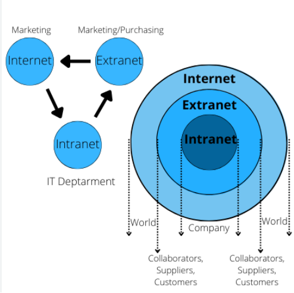

<!DOCTYPE html>
<html lang="en"></html>
<head>
    <meta charset="UTF-8">
    <meta name="viewport" content="width=device-width, initial-scale=1.0">
    <nav>
        <a href="index.html">Home</a>&#65372;
        <a href="www.html">World Wide Web</a>&#65372;
        <a href="tcpip.html">TCP/IP</a>&#65372;
        <a href="http.html">HTTP</a>&#65372;
        <a href="dns.html">DNS</a>&#65372;
        <a href="html.html">HTML</a>&#65372;
        <a href="webserver.html">Web Server</a>&#65372;
        <a href="webbrowser.html">Web Browser</a>&#65372;
        <a href="url.html">Uniform Resource Locator</a>&#65372;
        <a href="intranet.html">Intranet</a>&#65372;
        <a href="extranet.html">Extranet</a>&#65372;
        <a href="ftp.html">File Transfer Protocol</a>&#65372;
        <a href="web1.0.html">Web 1.0</a>&#65372;
        <a href="web2.0.html">Web 2.0</a>&#65372;
        <a href="web3.0.html">Web 3.0</a>&#65372;
        <a href="web4.0.html">Web 4.0</a>&#65372;

    </nav>
    <title>Terminology:Extranet</title>
     <style>
    body {
            
            background-color: #fff5f7;
            margin: 0;
            padding: 20px;
        }
        h1{
            color: #c2185b;
            font-size: 30px;
            text-transform: uppercase;
        }
        h2{
            color: #f48fb1;
            font-size: 22px;
            text-transform: uppercase;
            text-decoration: underline;

        }
        p{
            color: #333;
            font-size: 18px;
            line-height: 1.6;
            font-style: italic;
            padding: 10px;
        }
        ul{
            color: #333;
            font-size: 18px;
            line-height: 1.6;
            font-style: italic;
            padding: 10px;
        }
</style>
</head>
<body>
    <h2>Definition</h2>
    <p>
        An extranet is a private network that allows authorized users from outside an organization to access specific resources and information. It is an extension of an intranet, which is a private network used within an organization. Extranets are typically used to facilitate communication and collaboration between a company and its partners, suppliers, customers, or other stakeholders.
    </p>
        
    <h2>Key Characteristics</h2>
    <ul>
        <li><strong>Private Network:</strong> An extranet is a closed network that is only accessible to authorized users. It is not accessible to the general public.</li>
        <li><strong>External Access:</strong> Extranets allow authorized users from outside the organization to access specific resources and information while maintaining security and control over the shared data.</li>
        <li><strong>Collaboration:</strong> Extranets facilitate communication and collaboration between a company and its external stakeholders, such as partners, suppliers, or customers.</li>
        <li><strong>Security:</strong> Extranets are designed with security measures to protect sensitive information and ensure that only authorized users can access the network.</li>
    </ul>
    <h2>Benefits of an Extranet</h2>
    <ul>
        <li><strong>Improved Communication:</strong> Extranets enable efficient communication and collaboration between a company and its external stakeholders, regardless of their location.</li>
        <li><strong>Enhanced Productivity:</strong> By providing easy access to shared resources and information, extranets help improve efficiency and productivity in business processes.</li>
        <li><strong>Cost Savings:</strong> Extranets can reduce the need for physical meetings and paper-based processes, leading to cost savings.</li>
        <li><strong>Stronger Relationships:</strong> Extranets can help build stronger relationships with partners, suppliers, and customers by facilitating better communication and collaboration.</li>
    </ul>
    <h2>Common Uses of an Extranet</h2>
    <ul>
        <li><strong>Supply Chain Management:</strong> Extranets can be used to facilitate communication and collaboration between a company and its suppliers, allowing for better coordination of inventory, orders, and deliveries.</li>
        <li><strong>Customer Portals:</strong> Extranets can provide customers with access to specific resources, such as product information, support documentation, or order tracking.</li>
        <li><strong>Partner Collaboration:</strong> Extranets can enable collaboration between a company and its partners, allowing for the sharing of information, resources, and project management tools.</li>
        <li><strong>Employee Training:</strong> Extranets can be used to provide training materials and resources to employees who are working remotely or in different locations.</li>
    </ul>
    <h2>Extranet vs Intranet</h2>
    <p>
        While both intranets and extranets are private networks, they serve different purposes. An intranet is designed for internal use within an organization, while an extranet extends access to external users, such as partners, suppliers, or customers. Extranets allow authorized external users to access specific resources and collaborate with the organization while maintaining security and control over the shared information.
    </p>
    <h2>Conclusion</h2>
    <p>
        Extranets play a crucial role in facilitating communication and collaboration between a company and its external stakeholders. By providing secure access to specific resources and information, extranets help improve efficiency, productivity, and relationships with partners, suppliers, and customers.
    </p>
</body>
</html>